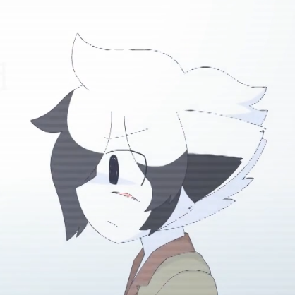

Counterfeit Tones
2017
Yonkagor
Counterfeit tones es una cancion descartada por yonkagor, nunca tuvo un lanzamiento oficial en su canal principal de youtube, su unica publicacion fue en sonundclud y se encuentra actualmente eliminada
Lyrics
Unfulfilled by the image I portray
My persona I loathe
Inner feelings of envy start to grow
My eyes lead me astray
Singing my counterfeit tones
Throw away faces I own
Even reflections and my lullabies
I've despised them for some time
All those praises to others you conveyed
Fills me with misery
So I copied their personality
As a lifeless display
Singing my counterfeit tones
Throw away faces I own
Even reflections and my lullabies
I've despised them for some time
Mutilating myself much more
To be the one you'll adore
But it pains my heart just to see me go
Hearing your truthful goodbyes
To this disembodied lie
Now that you've finally left me behind
I can't rewind

Unknown
Yonkat
Sin nombre oficial
A diferencia de los otros yonkats este nunca fue nombrado oficialmente